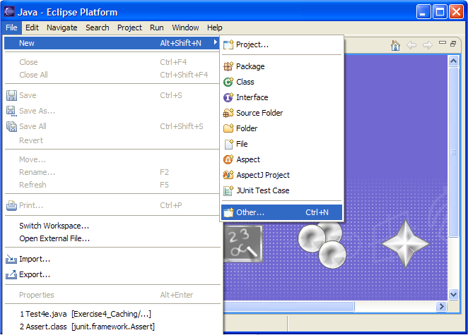
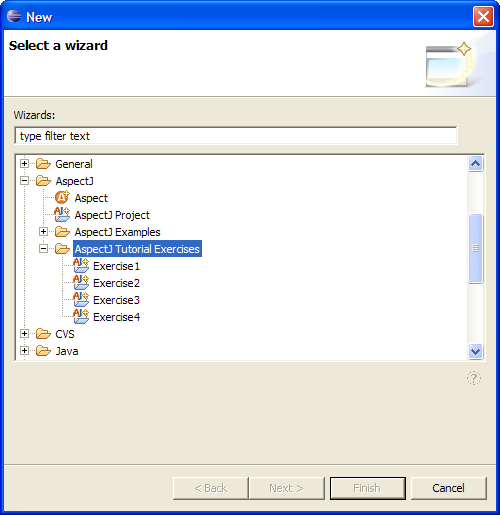
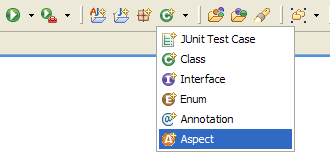
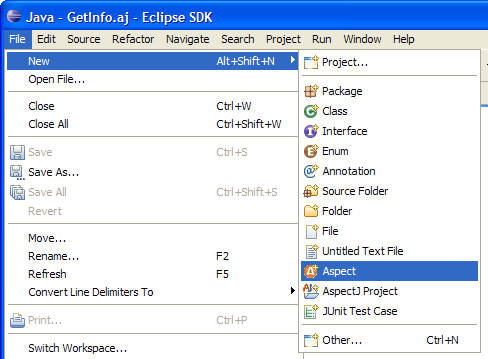
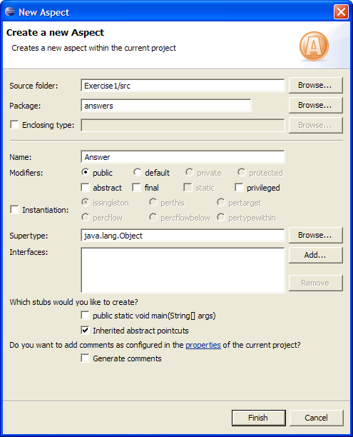
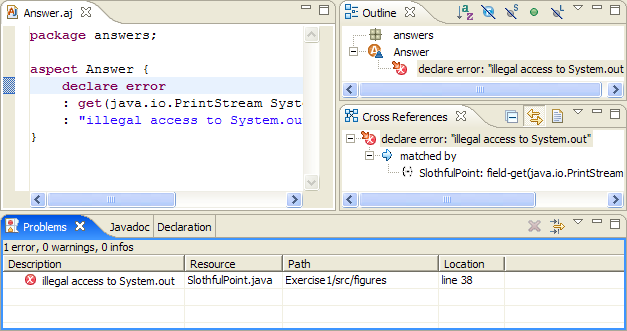
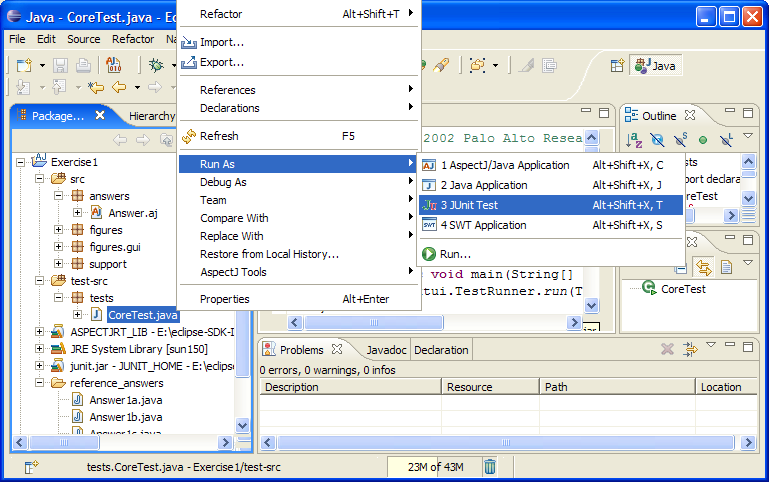
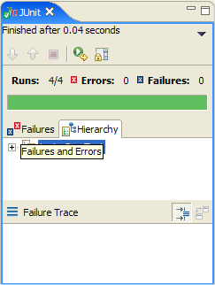
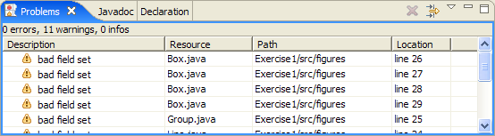

In this tutorial you will solve some basic programming tasks using AspectJ. The tasks progress from writing non-functional, development-only aspects to writing aspects that augment a deployed program with crosscutting features. This follows the same progression most users see in their own adoption of AspectJ.
Since this is a hands-on tutorial, you will be working with a live AspectJ distribution. The example code we will be working with is a simple figure editor, along with JUnit tests for each exercise. We will break up into groups of two to three people per computer to foster discussion within the group as well as with the presenters.
If you have a laptop running a recent version of Windows, MacOS or Linux, feel free to bring it along. We will provide CDs and other installation media for a standalone AspectJ system, including the figure editor code these exercises are based on and unit tests for the exercises. If you don't have a laptop with you, don't worry about it.
These notes consist of four sections of exercises, a quick reference to AspectJ syntax, and a UML diagram of a figure editor program.
The AspectJ Development Tools (AJDT) plugins for Eclipse provide support for using the AspectJ compiler in the Eclipse environment. Different versions of AJDT are available to support both the latest release version of Eclipse, and the latest milestone build. As part of the tutorial we will be providing distributions of base eclipse, the AJDT plugins and the exercises. Should you wish to install the exercises into an existing configuration on your machine, you can download the exercises plugin via the following URL:
http://eclipse.org/ajdt/EclipseCon2006/org.aspectj.tutorial.exercises_1.0.0.jarSimply copy this JAR file to your eclipse/plugins folder.
The key components to have installed are:
The best way to verify your installation is by attempting to create one of the 4 tutorial projects. To do this, open File>New>Other... as shown here (or press the New button on the toolbar):

You should then see the following option:

If you do, congratulations, you are ready to go !!
The easiest way to get started with AspectJ is to use it to enforce static invariants, also known as compile time checks. These can be as simple as verifying a particular API is never called or as sophisticated as verifying your layered architecture is adhered to.
The tutorial plugin includes four eclipse projects representing
the four major parts of this tutorial. Use the menus described in
the previous two screenshots to create each exercise - create
the first project now, Exercise1.
Task: Signal an error for calls to
System.out.println.
The way that we are all taught to print "hello world" from Java is
to use System.out.println(), so that is what we typically
use for one-off debugging traces. It's a common mistake to leave
these in your system far longer than is necessary. Type in the aspect
below to signal an error at compile time if this mistake is made.
This is your first aspect, in order to create the necessary Eclipse resource into which you can type the answer, use the New Aspect Wizard. You can access this wizard in two ways:
1. From the New Java Class drop-down on the toolbar:

2. From the File>New menu:

For this first aspect, fill it in as shown below:

After clicking Finish you should find yourself in the
new aspect, change it to look like this following code
Answer:
package answers;
import figures.*;
aspect Answer {
declare error
: get(java.io.PrintStream System.out) && within(figures..*)
: "illegal access to System.out";
}
After saving, a build will take place and you'll find one incorrect
trace in SlothfulPoint:

Note that this answer does not say that the call to the
println() method is incorrect, rather, that the field get
of the out field is illegal. This will also catch those
users who bind System.out to a static field to save typing.
After successfully finding the error, edit your program to remove the illegal tracing call.
Make sure your program still passes the JUnit test
tests.CoreTest (which it should also pass at the beginning of
all exercises) before continuing. Every exercise in this tutorial includes
tests, each of which should be run individually. To run a particular test,
locate it in the test-src folder, then, right click the test
and navigate to the Run>JUnit Test menu option as shown here:

If it runs OK, you should get the trusty green bar:

When it passes, you are ready to move on!
Task: Signal a warning for assignments outside of setter methods.
Tools: set, withincode,
the void set*(..) pattern
One common coding convention is that no private field should be assigned to outside of setter methods. Write an aspect to signal a warning at compile time for these illegal assignment expressions.
This is going to look like
aspect Answer {
declare warning: <pointcut here> : "bad field set";
}
where the pointcut picks out join points of private field sets outside of setter methods. "Outside", here, means that the code for the assignment is outside the text of the setter.
Make sure your program still passes the JUnit test
tests.CoreTest before continuing. Make sure you get eleven
warnings from this:

Wait to fix them until the next exercise.
Task: Allow assignmnents inside of constructors.
Tools: the new(..) pattern
Look at some of the warnings from the previous exercise. Notice that a lot of them are from within constructors. Actually, the common coding convention is that no private field should be assigned to outside of setter methods or constructors. Modify your answer to signal an actual error at compile time (rather than just a warning) when such an illegal assignment expression exists.
You'll want to add another withincode primitive
pointcut to deal with the constructors.
After you specify your pointcut correctly, you'll still find that the convention is violated twice in the figures package. You should see the following two errors:
.\figures\Point.java:37 bad field set .\figures\Point.java:38 bad field set
Rewrite these two occurrences so as not to violate
the convention. Make sure your program still passes the JUnit test
tests.CoreTest before continuing.
The next step in AspectJ adoption is often to augment a test suite by including additional dynamic tests, sometimes called runtime checks.
Task: Pass tests.Test2a.
Tools: args, before
Write an aspect to throw an IllegalArgumentException
whenever an attempt is made to set one of Point's
int fields to a value that is less than zero.
This should make the test case of tests.Test2a pass,
which wouldn't without your aspect. So before compiling in the
aspect,
$ java tests.Test2a .F..F.... Time: 0.04 There were 2 failures: 1) testTooSmall(tests.Test2a)junit.framework.AssertionFailedError: should have thrown IllegalArgumentException 2) testMove(tests.Test2a)junit.framework.AssertionFailedError: should have thrown IllegalArgumentException FAILURES!!! Tests run: 7, Failures: 2, Errors: 0
But after compiling in the aspect...
$ java tests.Test2a ....... Time: 0.04 OK (7 tests)
Answer:
package answers;
import figures.*;
aspect Answer {
before(int newValue): set(int Point.*) && args(newValue) {
if (newValue < 0) {
throw new IllegalArgumentException("too small");
}
}
}
Task: Pass tests.Test2b.
Tools: call
Group is a FigureElement class that
encapsulates groups of other figure elements. As such, only actual
figure element objects should be added to Group objects.
Write an aspect to throw an IllegalArgumentException
whenever Group.add() is called with a null
value.
Look at tests/Test2b.java to see exactly what we're
testing for.
Task: Pass tests.Test2c.
Tools: target
Another constraint on a well-formed group is that it should not
contain itself as a member (though it may contain other groups). Write
an aspect to throw an IllegalArgumentException whenever
an attempt is made to call Group.add() on a
null value, or on the group itself.
You will want to use a target pointcut to expose the
Group object that is the target of the add
call.
Task: Pass tests.Test2d.
Tools: around advice
Instead of throwing an exception when one of Point's
int fields is set to a negative value, write an aspect
to trim the value to zero. You'll want to use around
advice that exposes the new value of the field assignment with an
args pointcut, and proceed with the trimmed
value.
This is going to look something like
aspect Answer {
void around(int val): <Pointcut> {
<Do something with val>
proceed(val);
}
}
Task: Pass tests.Test2e
Tools: around advice
A postcondition of a Point's move
operation is that the Point's coordinates should change.
If a call to move didn't actually move a point by the desired
offset, then the point is in an illegal state and so an
IllegalStateException should be thrown.
Note that because we're dealing with how the coordinates change during move, we need some way of getting access to the coordinates both before and after the move, in one piece of advice.
Task: Pass tests.Test2f
Tools: the Rectangle(Rectangle)
constructor, the Rectangle.translate(int, int) method.
FigureElement objects have a getBounds()
method that returns a java.awt.Rectangle representing the
bounds of the object. An important postcondition of the general
move operation on a figure element is that the figure
element's bounds rectangle should move by the same amount as the
figure itself. Write an aspect to check for this postcondition --
throw an IllegalStateException if it is violated.
Tracing is one of the classic AspectJ applications, and is often the first where AspectJ is used on deployed code.
Task: Pass tests.Test3a.
Tools:
Log.write(String),
thisJoinPoint.toString(),
execution,
within
Write an aspect to log the execution of all public methods
in the figures package. To do this, use the utility class
Log (this is in the support package, so
remember to import it into your answer aspect). Write a message
into the log with the static write(String) method.
Task: Pass tests.Test3b.
Tools: target
AspectJ can expose the target object at a join point for tracing. In this exercise, you will print not only the join point information, but also the target object, with the form
thisJoinPointInfo at targetObject
Task: Pass tests.Test3c.
Tools: args.
Write an aspect to log whenever a Point is added to a
group. The args pointcut allows you to select join points
based on the type of a parameter to a method call.
Look at the test case to see the trace message we expect you to write in the log.
Task: Pass tests.Test3d.
Tools: inter-type field declaration
Make sure that a Point is never added to more
than one Group. To do so, associate a boolean flag
with each Point using an inter-type declaration,
such as
boolean Point.hasBeenAdded = false;
Check and set this flag with the same kind of advice from your
answer to problem (c). Throw an IllegalStateException if
the point has already been added.
Task: Pass tests.Test3e.
Extend your solution to problem (d) by using the string
representation of the Point's containing group as the msg
part of the IllegalStateException.
Computation of the bounding box of Group objects
needs to deal with all aggregate parts of the group, and this
computation can be expensive. In this section, we will explore
various ways of reducing this expense.
Task: Pass tests.Test4a.
Tools: around,
FigureElement.MAX_BOUNDS
Group's getBounds() method could be
understood to be a conservative approximation of the bounding box of a
group. If that is true, then it would be a legal (and much faster)
implementation of getBounds() to simply always return a
rectangle consisting of the entire canvas. The entire canvas is returned
by the static field FigureElement.MAX_BOUNDS.
Write an aspect to implement this change. You can override
Group's getBounds() method entirely with
around advice intercepting the method.
Task: Pass tests.Test4b.
Tools: inter-type field.
Instead of making the (very) conservative approximation of
getBounds() from part (a), write an aspect instead that
remembers the return value from the first time
getBounds() has been called on a Group, and
returns that first Rectangle for every subsequent
call.
Hint: You can use an inter-type declaration to keep some
state for every Group object.
Task: Pass tests.Test4c.
Tools: before
While caching in this way does save computation, it will lead to
incorrect bounding boxes if a Group is ever moved.
Change your aspect so that it invalidates the cache whenever the
move() method of Group is called.
Task: Pass tests.Test4d.
Of course, part (c) didn't really solve the problem. What if a
Point that is part of a Group moves?
Whenever either of a Point's fields are set it should invalidate the
caches of all enclosing groups. Use your solution to problem 3c to
modify your invalidation criteria in this way, but note that this is
slightly different than the problem in 3c: Here you care about fields,
where there you cared about method calls.
Task: Pass tests.Test4e.
Tools: You're on you're own
Did you really do part (d) correctly? Run the JUnit test
tests.Test4e to see. If you pass, congratulations, now
go help other people. Otherwise, you have fallen prey to our cruel
trap: Remember that whenever a point moves it should invalidate the
caches of all enclosing groups.
Congratulations! Not only have you learned about how to program in AspectJ, you have worked through exercises paralleling a common AspectJ adoption strategy. You should be able to pick up AspectJ and use it to improve your own software's crosscutting modularity.
You can find the current binaries, source, documentation and an active user community for AspectJ at
http://www.eclipse.org/aspectj